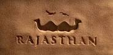
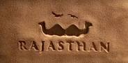

03 Days Best Of Rajsthan Tour -
Ranakpur
Ranakpur Ranakpur is a village located in Desuri tehsil near Sadri town in the Pali district of Rajasthan in western India. It is located between Jodhpur and Udaipur. 162 km from Jodhpur and 91 km from Udaipur, in a valley on the western side of the Aravalli Range. The Nearest Railway Station to reach Ranakpur is Falna Railway station. Ranakpur is one among the most famous places to visit in Pali, Rajasthan. Ranakpur is easily accessed by road from Udaipur. (English translation: "Palace of Winds" or "Palace of the Breeze") is a palace in Jaipur, India, so named because it was essentially a high screen wall built so the women of the royal household could observe street festivals while unseen from the outside. Constructed of red and pink sandstone, the palace sits on the edge of the City Palace, and extends to the zenana, or women's chambers.

Day 01 :
The palace, called a "specimen of fanciful architecture",[citation needed] is located to the south of the Jaipur city, at the main road intersection called the Badi Chaupad (big four square). Jaipur city is well connected by road, rail and air links with the rest of the country.[8] Jaipur Railway Station is a central main station on the broad gauge line of the Indian Railways.

Day 02 :
Day 2
As well, Jaipur is connected by major roads, and by the International Airport at Sanganer, at a distance of 13 kilometres (8.1 mi) from the city.It is lies at a distance of 11km from Jaipur.There are some other famous and important places near The City Palace which you can visit.Many historical attraction places to visit in Rajastan.

Day 03 :
Day 03
It is particularly striking when viewed early in the morning, lit with the golden light of sunrise.Now also we can visit Amer Fort ,Jantar Mantar,Hawa Mahal which is also become the most visited place in Rajastan and also much more places to see.From a particular point and bring tourists back to around the same point next morning there are some specific cruises mostly in the Ashtamudi area, such as the one night cruise to Jaipur via visiting places.
CONFIRM YOUR TOUR RIGHT HERE....

Click here to logout